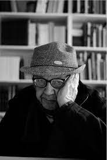

Biography
Pioneer of color photography

Saul Leiter (1923-2013)
Saul Leiter was a photographer and painter whose work was an integral part of the creation of the New York School. Growing up in Pittsburgh, PA, Leiter studied to become a rabbi. When he was 23 years old, he exchanged school for New York City and a career as an artist. In his early years, Leiter was drawn to painting, and he had the opportunity to meet Richard Pousette-Dart, an Abstract Expressionist painter.
Leiter was encouraged by Pousette-Dart and W. Eugene Smith to try his hand at photography. He ventured into color photography in 1948. In 1953, Leiter's black-and-white photographs were included in an exhibition of Edward Steichen's entitled Always the Young Stranger at The Museum of Modern Art. Leiter's color fashion photographs were published by Henry Wolfe in Esquire and Harper's Bazaar in the late 1950s. This kicked off his 20-year fashion photography career leading to publications in such magazines as British Vogue, Elle, Nova, Show, and Queen. Leiter's work has a quality similar to that of a painting and is unique in the world of photography. In addition to his photography, Leiter continues to paint, potentially the reason for the similarities between his photography and paintings.
Today the photographs that Leiter created are referenced in many colleges and universities in the United States, including the Art Institute of Chicago. Some of the more current solo exhibitions of Leiter's work have been in a retrospective in Hamburg in 2012, at Fifty One Fine Art Photography in Antwerp in 2011, in a show entitled New York Reflections in Amsterdam in 2011, and at Mois de la Foto in Paris in 2010. In 2008, Leiter had six solo exhibitions spanning the globe, including shows in Paris, Milan, New York, and London. His work is known worldwide. Leiter's first museum exhibition in Europe was hosted by the Foundation Henri Cartier-Bresson in Paris. Leiter is represented by the Howard Greenberg Gallery in New York.